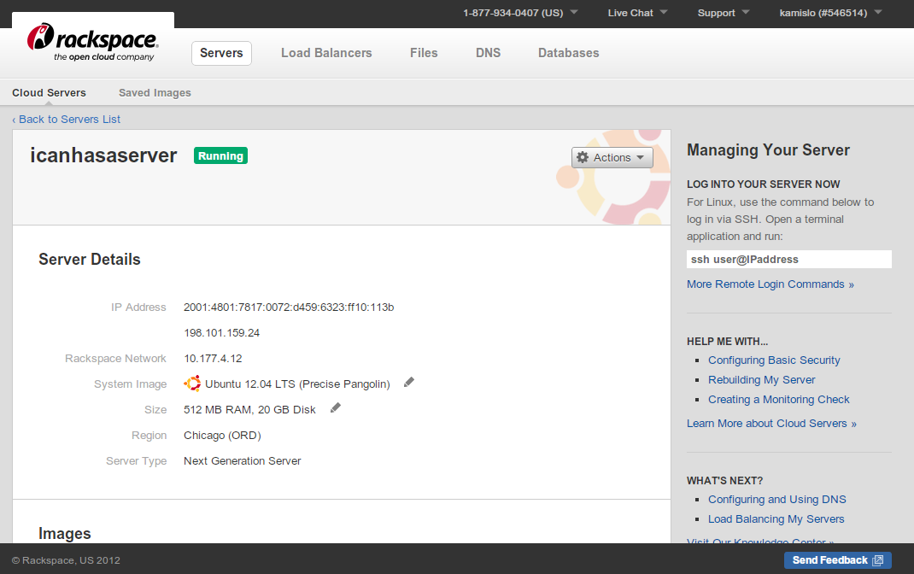
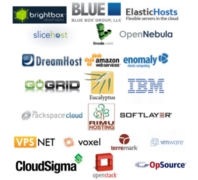

Avoiding Vendor Lock-In
Using Apache Libcloud
Tomaz Muraus
tomaz@apache.org
Cloud Open 2012, San Diego, CA
Tomaz Muraus
tomaz@apache.org
Cloud Open 2012, San Diego, CA
“Libcloud is a Python library which abstracts differences between cloud provider APIs and allows users to manage their cloud resources (servers, storage, load-balancers, dns) using a unified and easy to use interface.”
Turns this:
from libcloud.compute.types import Provider
from libcloud.compute.providers import get_driver
Cls = get_driver(Provider.RACKSPACE)
driver = Cls('username', 'api key')
size = driver.list_sizes()[0]
images = driver.list_images()[0]
node = driver.create_node(name='icanhasaserver', size=size,
image=image)
Into this:

<DescribeInstancesResponse
xmlns="http://ec2.amazonaws.com/doc/2010-08-31/">
<requestId>56d0fffa-8819-4658-bdd7-548f143a86d2</requestId>
<reservationSet>
<item>
<reservationId>r-07adf66e</reservationId>
<instancesSet>
<item>
<instanceId>i-4382922a</instanceId>
<imageId>ami-0d57b264</imageId>
<instanceState>
<code>0</code>
<name>pending</name>
</instanceState>
<privateDnsName/>
de:0:0:write:requests 466 rx 760681 vnc:password testpass ide:0:0 f0202f1c-0b4f-4cfc-8ae3-e30951d09ef0 ide:0:0:read:requests 7467 ide:0:0:read:bytes 165395968 vnc:ip 178.22.66.28 boot ide:0:0 smp 1 started 1286568422 nic:0:model virtio status active user 93b34fd9-7986-4b25-8bfd-98a50383605d ide:0:0:media disk name cloudsigma node
[
{
"ips": [
{
"address": "67.214.214.212"
}
],
"memory": 1073741824,
"id": "99df878c-6e5c-4945-a635-d94da9fd3146",
"storage": 21474836480,
"hostname": "foo.apitest.blueboxgrid.com",
"description": "1 GB RAM + 20 GB Disk",
"cpu": 0.5,
"status": "running"
}
]

import os
from libcloud.compute.types import Provider
from libcloud.compute.providers import get_driver
from libcloud.compute.deployment import MultiStepDeployment, ScriptDeployment, \
SSHKeyDeployment
conn = get_driver(Provider.RACKSPACE)('username', 'key')
install_key =
SSHKeyDeployment(open(os.path.expanduser("~/.ssh/id_rsa.pub")).read())
install_puppet = ScriptDeployment("apt-get -y install puppet")
msd = MultiStepDeployment([install_key, install_puppet])
image = conn.list_images()[0]
size = conn.list_sizes()[0]
node = conn.deploy_node(name='test', image=image, size=size,
deploy=msd)
import subprocess
from libcloud.storage.types import Provider
from libcloud.storage.providers import get_driver
driver = get_driver(Provider.CLOUDFILES_US)('username', 'key')
directory = '/home/some/path'
cmd = 'tar cvzpf - %s' % (directory)
container = driver.create_container('backups')
pipe = subprocess.Popen(cmd, bufsize=0, shell=True, stdout=subprocess.PIPE)
return_code = pipe.poll()
while return_code is None:
# Compress data in our directory and stream it directly to CF
container.upload_object_via_stream(iterator=pipe.stdout,
object_name='backup.tar.gz')
return_code = pipe.poll()
print 'Upload complete'
driver = get_driver(Provider.RACKSPACE_US) Rackspace('username', 'api key')
new_balancer = driver.create_balancer(name='test-lb',
algorithm=Algorithm.ROUND_ROBIN, port=80, protocol='http',
members=(Member(None, '192.168.86.1', 8080),
Member(None, '192.168.86.2', 8080)))
# wait for the balancer to become ready
while True:
balancer = driver.get_balancer(balancer_id=new_balancer.id)
if balancer.state == State.RUNNING:
break
time.sleep(20)
# fetch list of members
members = balancer.list_members()
print members